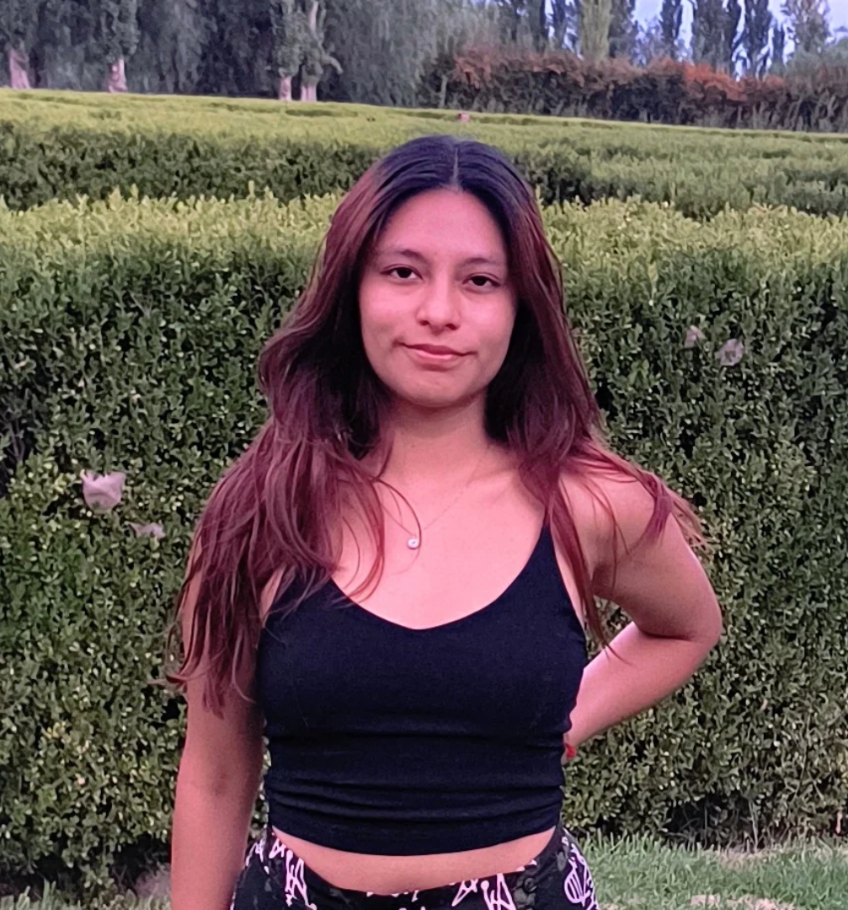
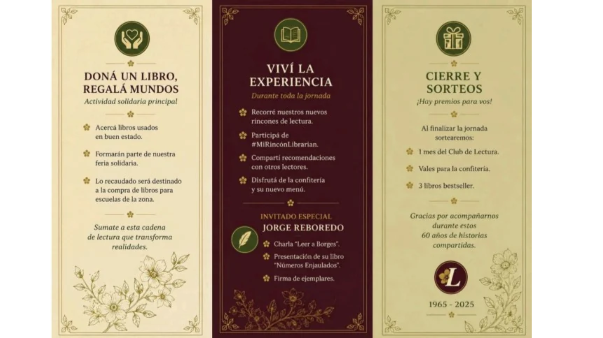
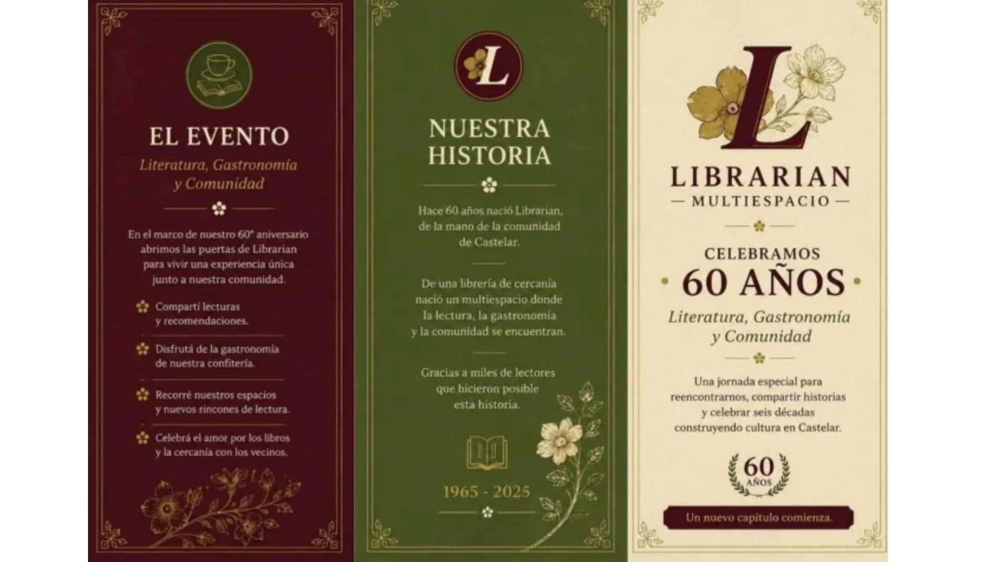
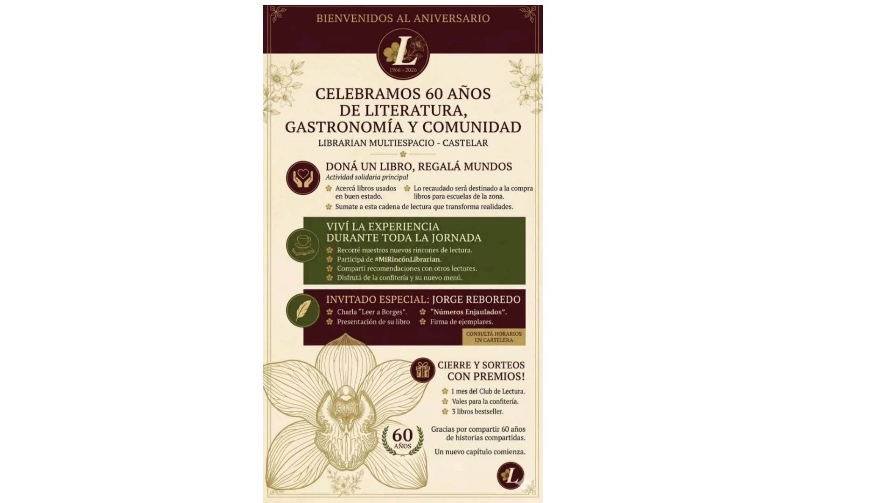
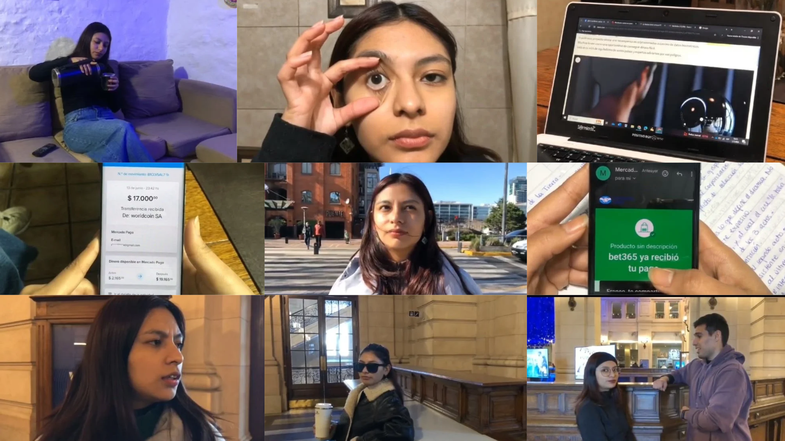

Reflejos de mí

Soy estudiante de Comunicación Social, orientación Publicidad de la UBA. Me interesa explorar distintas formas de comunicar, contar historias e investigar. Disfruto el proceso de buscar ideas, conectar conceptos y aportar propuestas para desarrollarlas.
Me considero curiosa, observadora y detallista. Me interesa seguir explorando áreas como la creatividad, el planning, la investigación y la producción audiovisual.
Proyecto 1 · Proyecto ficticio
Librería Librarian
Proyecto de campaña y activación para renovar la experiencia de una librería y multiespacio cultural, en el marco de su aniversario número 60.
Mi participación
- Conceptualización de la campaña.
- Propuesta de la activación principal.
- Desarrollo y diseño de tres piezas gráficas específicas.
1. Folleto tríptico
Idea y desarrollo de una pieza de seis caras para difundir la activación principal de la librería por su aniversario. Incluye las actividades de la jornada y destaca la actividad solidaria, el invitado y el sorteo.


2. Cartel de invitación
Pieza para la vía pública que invita a quienes circulen por la zona. Comunica la fecha del evento y las actividades que se desarrollarán.

Proyecto 2 · Cortometraje
Escaneo de vida
Objetivo: Desarrollar una pieza audiovisual de ficción de entre 5 y 7 minutos, llevando adelante todas las etapas de producción: desde la creación del guion y la construcción narrativa hasta la planificación, el rodaje y la realización final. Explorar el lenguaje audiovisual como herramienta para contar historias y transmitir ideas.
La historia presenta a una joven estudiante que vende su iris. Luego comienza a recibir movimientos bancarios, registros y actividad en aplicaciones que no reconoce. Al intentar averiguar qué sucede, llega a un banco donde se encuentra con distintas versiones de sí misma. El cortometraje explora cuestiones vinculadas con la identidad, la tecnología y la clonación.
Mi participación
- Propuesta de la idea inicial vinculada con la venta del iris.
- Interpretación de la protagonista.
- Codirección y filmación junto a mis compañeros.
Escenas del cortometraje
